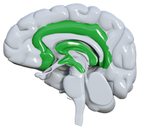

Guía didáctica
//Descripción del REA
{kind=link}
Título: REA "MiniCanSat: primeros pasos en la exploración".
Temática: Ingeniería aeroespacial, pensamiento computacional y ciencia de datos aplicada mediante el desafío CanSat.
Autoría: Juan Enrique Agudo Garzón, Joaquín Alberto Pagador Becerra y Antonino Vara Gazapo, para programa CREA.
Materia: Matemáticas, Conocimiento del Medio, Lengua, Educación Artística y Tecnología.
Metodología: Aprendizaje Basado en Proyectos (ABP) y Aprendizaje Cooperativo.
Curso: 3er Ciclo de Educación Primaria (5.º y 6.º) y 1.º de ESO.
Sesiones: 12 sesiones presenciales y 3 horas de trabajo autónomo (reflexión en el Diario).
Producto final: Diseño, construcción y lanzamiento de un prototipo de minisatélite funcional (MiniCanSat) con telemetría activa. El reto concluye con un informe final de misión (MiniPDR) y una exposición pública de los resultados científicos. Se incluyen rúbricas para Programación, Construcción, Lanzamiento y Conclusiones.
Descripción: Este REA transforma el aula en un Centro de Mando Espacial. A través de una narrativa inmersiva apoyada en una Novela Visual, el alumnado asume roles profesionales para resolver un desafío de ingeniería real: miniaturizar los sistemas de un satélite en una lata de refresco. El recurso destaca por su enfoque DUA, ofreciendo versiones imprimibles (Teoría y Actividades), un simulador de vuelo interactivo para la formulación de hipótesis, y un itinerario gamificado que guía al estudiante desde la programación en Micro:bit hasta el análisis de datos climáticos, conectando la tecnología con los ODS y la realidad sociolaboral de Extremadura.
El recurso y la Situación de Aprendizaje (SdA)
El REA como Situación de Aprendizaje: Este recurso no es una simple suma de contenidos, sino un reto competencial. Para resolver la misión final, el alumnado deberá movilizar competencias específicas aplicando saberes básicos de física, matemáticas y tecnología en un escenario realista y motivador.
Contexto de aplicación
El escenario sitúa al alumnado como un equipo de especialistas de una agencia espacial que debe participar en la simulación del desafío internacional CanSat. Esta narrativa, reforzada por los personajes Alex y Sara, da un propósito real a la investigación: miniaturizar tecnología para explorar el entorno.
Secciones y estimación de tiempos
La propuesta está diseñada para desarrollarse en unas 15-20 horas de trabajo total, distribuidas en las siguientes fases operativas:
- Fase 1: Motivación y Organización (2 sesiones): Introducción narrativa, formación de equipos y asignación de roles técnicos.
- Fase 2: Investigación y Programación (3 sesiones): Exploración de sensores en Micro:bit y desarrollo del código de telemetría por radio.
- Fase 3: Simulación, Construcción y Lanzamiento (4 sesiones): Validación de variables en el simulador, fabricación de la carcasa protectora y montaje del sistema de descenso.
- Fase 4: Operación y Difusión (3 sesiones): Lanzamiento real, análisis de datos en gráficas y exposición pública de los resultados científicos (MiniPDR).
Conexiones con la Educación Profesional
A continuación se detalla cómo este proyecto visibiliza sectores tecnológicos estratégicos y desarrolla habilidades clave (soft skills) para acercar al alumnado al mundo laboral:
| Sector Profesional | Habilidades (Soft Skills) desarrolladas | Profesiones vinculadas |
|---|---|---|
| Aeroespacial y Telecomunicaciones | Pensamiento computacional, gestión de radiofrecuencia y resolución de problemas técnicos. | Ingeniero/a de Sistemas, Especialista en Telecomunicaciones. |
| Análisis de Datos y Ciencia | Capacidad analítica, gestión de archivos CSV y síntesis de información en gráficas. | Científico/a de datos, Analista ambiental. |
| Gestión de Proyectos | Liderazgo, gestión del tiempo, documentación de evidencias y comunicación efectiva. | Coordinador/a de misión, Gestor/a de información. |
Objetivos didácticos y Metodología
Objetivos de la SdA
- Comprender los fundamentos de la tecnología aeroespacial identificando las funciones de un satélite real.
- Diseñar y construir un prototipo físico (carcasa y paracaídas) aplicando destrezas manuales de ingeniería.
- Desarrollar el pensamiento computacional programando sensores y comunicación por radiofrecuencia.
- Aplicar el método científico para predecir variables mediante simulación y analizar datos reales de telemetría.
- Fomentar el trabajo cooperativo asumiendo responsabilidades profesionales de forma equitativa.
Metodología en acción
Para alcanzar estos objetivos, el recurso despliega diversas estrategias de aprendizaje activo que sitúan al estudiante en el centro del proceso:
| Técnica / Estrategia | ¿Dónde y cómo se aplica en este REA? |
|---|---|
| ABP y Simulación | Eje vertebral. El itinerario orbital y el simulador interactivo permiten ensayar hipótesis antes de la construcción física. |
| Aprendizaje Cooperativo | Asignación de roles profesionales obligatorios en cada equipo y coevaluación del funcionamiento grupal al final de la misión. |
| Gamificación y Narrativa | Uso de una Novela Visual introductoria y sistema de insignias ODS para motivar el progreso y la identificación de logros. |
| Metacognición | Uso de "Diarios de Misión" (Reflexión) tras cada fase y listas de cotejo interactivas para la autorregulación del alumnado. |
Concreción Curricular
1. Conexión con el Perfil de Salida
En esta tabla destacamos los descriptores operativos principales que el alumnado movilizará durante la resolución del reto espacial:
| Descriptor Operativo | Evidencia en el Reto del REA |
|---|---|
| STEM2 | Uso del simulador y análisis de datos comparando sensores con hipótesis previas (Sección: Lanzamos). |
| STEM3 | Diseño y construcción física de la carcasa y paracaídas, evaluando su resistencia (Sección: Construimos). |
| CD5 | Creación de soluciones digitales mediante el código de telemetría por radio (Sección: Programamos). |
| CPSAA3 | Colaboración proactiva mediante el reparto de roles y la superación de desafíos técnicos (Sección: ¡Misión cumplida!). |
2. Concreción curricular y Evaluación
La siguiente matriz relaciona los criterios de evaluación y saberes básicos con los momentos e instrumentos de evaluación del REA:
| Criterios de Evaluación | Saberes Básicos | Actividad y Momento | Instrumento y Agente |
|---|---|---|---|
| Diseñar y programar soluciones sencillas aplicando pensamiento computacional. | Programación por bloques, sensores y radiofrecuencia. | Fase 2 (Programamos): Envío y recepción de telemetría. | Rúbrica de Programación. (Heteroevaluación - Docente) |
| Realizar prototipos aplicando destrezas manuales y técnicas de construcción. | Estructuras, materiales, descenso y seguridad. | Fase 3: Simulador y Montaje físico de la carcasa y paracaídas. | Rúbrica de Construcción. (Heteroevaluación - Docente) |
| Cooperar en proyectos asumiendo roles y responsabilidades equitativas. | Técnicas de trabajo cooperativo y gestión de roles. | Fase 4: Exposición final e Informe de misión. | Coevaluación de equipo. (Alumnado) |
Desafíos del S. XXI y ODS
El proyecto integra los retos globales de forma natural, fomentando una ciudadanía responsable y técnica:
| ODS o Desafío | Aplicación práctica en el REA |
|---|---|
| ODS 13: Acción por el clima | Monitorización de temperatura y luz para investigar el impacto ambiental local (Sección: Lanzamos). |
| ODS 9: Industria e innovación | Fomento de la innovación técnica mediante la resolución de problemas de ingeniería aeroespacial. |
| ODS 3: Salud y bienestar | Estudio de seguridad en lanzamientos y uso de equipos de protección (gafas, perímetros). |
DUA (Diseño Universal para el Aprendizaje)
El REA se ha diseñado minimizando barreras cognitivas y de expresión a través de evidencias concretas en cada principio:
| Principio DUA | Pautas clave | Evidencias en este REA |
|---|---|---|
 1. Redes afectivas(El "Por qué") |
Minimizar amenazas y distracciones. Contextualización real. | Novela Visual para reducir la ansiedad inicial y simulador como entorno seguro de ensayo-error. |
(El "Qué") |
Aclarar vocabulario y símbolos. Diferentes formatos de información. | Uso de tooltips interactivos para tecnicismos y Dossier de Teoría imprimible. |
(El "Cómo") |
Múltiples medios de expresión. Apoyar la planificación. | El simulador permite ajustar variables. Libertad de formato (audio, póster, vídeo) en el producto final. |
Plantear y desarrollar proyectos diseñando, fabricando y evaluando prototipos para dar solución a un problema de forma creativa.
Desarrollar soluciones digitales sencillas y sostenibles para resolver problemas concretos o retos propuestos.
Comprender proactivamente las perspectivas de los demás y colaborar, actuando con empatía, respeto y tolerancia.
Comprender y aplicar métodos científicos para identificar problemas, formular hipótesis y extraer conclusiones basadas en pruebas.
Recursos y/o conocimientos previos necesarios
Indicaremos aquí la lista de recursos y conocimientos previos necesarios para llevar a cabo la situación de aprendizaje.
Para facilitar la aplicación de este REA, se ha priorizado el uso de material reciclado, herramientas habituales en los centros educativos y software gratuito, evitando la necesidad de adquirir material costoso o de un solo uso.
🧠 Conocimientos previos recomendados
- Física elemental: Nociones básicas sobre la gravedad, la resistencia del aire y el concepto de presión.
- Pensamiento computacional: Familiaridad básica con entornos de programación por bloques (uso de variables, bucles y condicionales simples).
- Seguridad en el taller: Normas básicas de uso seguro de herramientas de corte (tijeras, cúter).
💻 Tecnológicos
- Placas Micro:bit: Idealmente dos por equipo (una actúa como el satélite MiniCanSat que recoge datos y la otra como estación receptora en tierra conectada por radio).
- Alimentación: Portapilas con conector JST y pilas AAA para dar autonomía a la Micro:bit del satélite.
- Dispositivos: Ordenadores, Chromebooks o tabletas con conexión a Internet.
- Software: Acceso al entorno gratuito web Microsoft MakeCode para Micro:bit (no requiere instalación).
- Opcional pero recomendado: Un teléfono móvil o tableta para grabar los lanzamientos a cámara lenta y poder analizar posteriormente la altura, velocidad y apertura del paracaídas.
🛠️ Materiales de construcción, herramientas y equipamiento
- Para el MiniCanSat y Paracaídas: Tubos de espuma o "churros" de piscina (como carcasa protectora), bolsas de basura de plástico ligero, hilo resistente (bramante o de cometa) y cinta americana.
- Para el Cohete Vehículo: Botellas de plástico PET de 1,5 o 2 litros. Importante: deben ser de bebidas carbonatadas (con gas), ya que están diseñadas para soportar alta presión. Plástico rígido (de carpetas viejas o envases) o cartón contracolado para hacer las aletas.
- Herramientas básicas: Tijeras, cúter, bridas de nylon, regla y rotulador permanente.
- Para el Lanzamiento (Material común para la clase): Una lanzadera o base para cohetes de agua (se puede fabricar de forma muy económica con tubos de PVC y bridas), una bomba de aire de bicicleta de pie que incluya manómetro (vital para controlar los PSI por seguridad) y gafas de protección ocular para los encargados del lanzamiento.
📄 Vuestra opinión nos interesa
Los recursos educativos del programa CREA son elaborados, desinteresadamente, por profesorado de Extremadura que participa en el programa de Creación de Recursos Educativos Abiertos (CREA) de Innovated, el Plan de Educación y Competencia Digital de Extremadura desarrollado desde la Dirección General de Innovación e Inclusión Educativa.
Colabora con nosotros, de Programa CREA (CC BY-SA)
Ofrecemos estos recursos de forma gratuita a toda la comunidad educativa, con licencia abierta CC BY-SA, como una forma de contribuir a la mejora de la calidad de la educación y el uso de metodologías activas.
- Por ello, estamos muy interesados en la opinión y sugerencias de mejora que otras compañeras y compañeros docentes nos transmitan sobre nuestros recursos. Por ejemplo, participando en Experiencias CREA, donde los docentes escriben una entrada para nuestra web, a modo de blog, narrando cómo ha sido la aplicación del recurso en el aula. Para centros extremeños es posible inscribirse directamente en Rayuela y para otras procedencias, a través de este formulario, donde recogemos los datos de contacto. Os podemos proporcionar una plantilla para redactar esa entrada.
- Igualmente, si encontráis alguna errata, o enlace roto, etc., estaremos agradecidos si nos lo indicáis, para poder subsanarlo. Por ejemplo, a través de nuestro correo electrónico: programacrea@educarex.es
¡Muchas gracias por confiar en nuestros recursos educativos!
| Título | MiniCanSat: primeros pasos en la exploración espacial |
|---|---|
| Descripción |
Este Recurso Educativo Abierto (REA) ofrece una guía paso a paso para que docentes y estudiantes desarrollen un MiniCanSat, una primera aproximación al desafío CanSat.
Con este REA, cualquier docente podrá guiar a su alumnado en una experiencia práctica y motivadora que fomenta el pensamiento computacional, la creatividad y el interés por la ciencia y la tecnología, preparándolos para futuras competiciones CanSat. |
| Autoría | Juan Enrique Agudo Garzón, Joaquín Alberto Pagador Becerra y Antonino Vara Gazapo |
| Licencia | Creative Commons BY-SA 4.0 |
Este contenido fue creado con eXeLearning, el editor libre y de fuente abierta diseñado para crear recursos educativos.